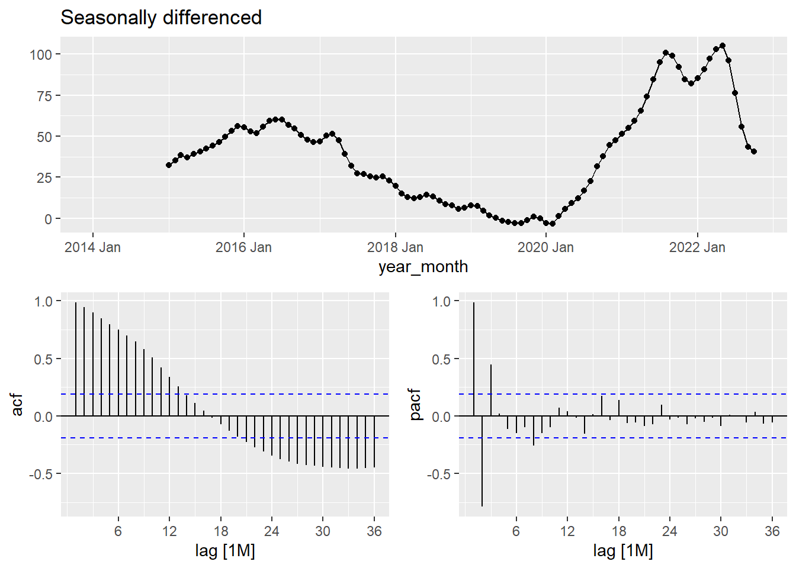
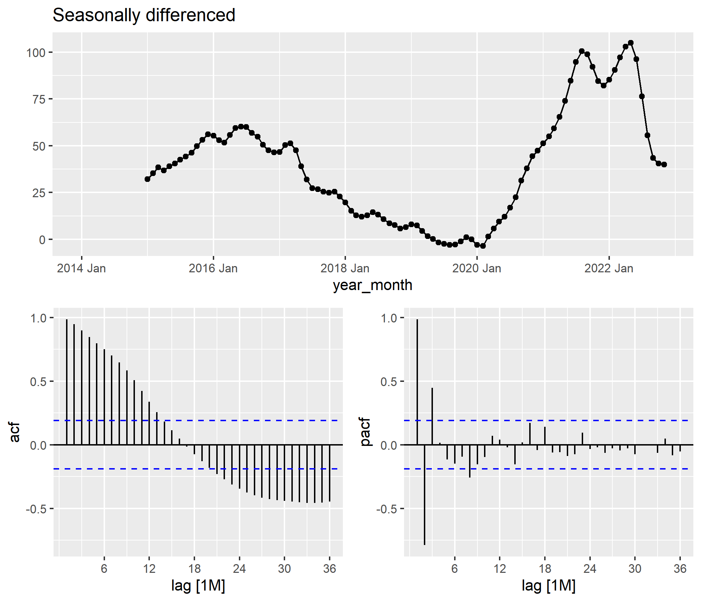
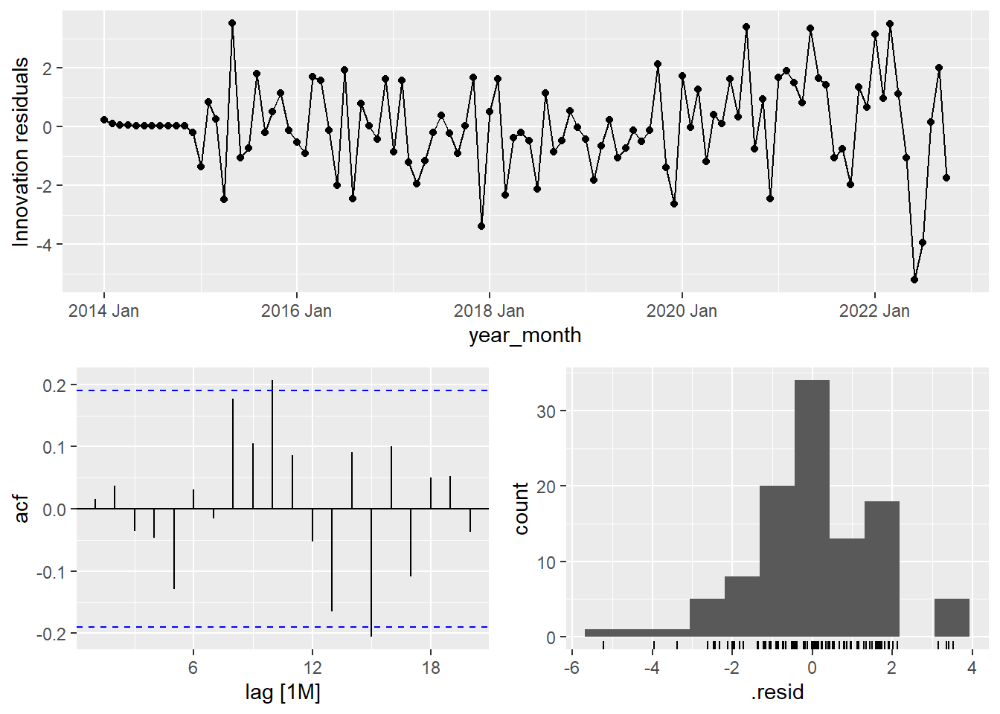

Show the code
library(tidyverse)
library(lubridate); library(tsibble)
library(readxl)
library(fpp3)library(tidyverse)
library(lubridate); library(tsibble)
library(readxl)
library(fpp3)In this project, I will perform a time series analysis using Zillow’s historical median home prices for the US from March 2015 to October 2022. The project aims to provide information on renting costs in Orlando- FL, Kissimmee- FL, Portland- OR, and Houston- TX, and find the month that offers the lowest price to move in.
You can find this free dataset on the Zillow website: https://www.zillow.com/research/data/#other-metrics
raw_city <- read.csv("C:/Users/karol/Desktop/Portfolio/City_zori_sm_month.csv")str(raw_city[,c(1:11)])'data.frame': 3500 obs. of 11 variables:
$ RegionID : int 6181 12447 39051 17426 6915 40326 13271 18959 54296 38128 ...
$ SizeRank : int 0 1 2 3 4 5 6 7 8 9 ...
$ RegionName: chr "New York" "Los Angeles" "Houston" "Chicago" ...
$ RegionType: chr "city" "city" "city" "city" ...
$ StateName : chr "NY" "CA" "TX" "IL" ...
$ State : chr "NY" "CA" "TX" "IL" ...
$ Metro : chr "New York-Newark-Jersey City, NY-NJ-PA" "Los Angeles-Long Beach-Anaheim, CA" "Houston-The Woodlands-Sugar Land, TX" "Chicago-Naperville-Elgin, IL-IN-WI" ...
$ CountyName: chr "Queens County" "Los Angeles County" "Harris County" "Cook County" ...
$ X3.31.2015: num 2730 2004 1285 1555 1019 ...
$ X4.30.2015: num 2755 2011 1293 1572 1029 ...
$ X5.31.2015: num 2780 2033 1304 1587 1040 ...We have to make this dataset tidy. Tidy Data is a way of structuring data so that it can be easily understood by people and analyzed by machines.
I need to remove the X at the beginning of the dates (X3.31.2015,…)
names(raw_city) <- sub("^X", "", names(raw_city))
str(raw_city[,c(1:10)],10)'data.frame': 3500 obs. of 10 variables:
$ RegionID : int 6181 12447 39051 17426 6915 40326 13271 18959 54296 38128 ...
$ SizeRank : int 0 1 2 3 4 5 6 7 8 9 ...
$ RegionName: chr "New York" "Los Angeles" "Houston" "Chicago" ...
$ RegionType: chr "city" "city" "city" "city" ...
$ StateName : chr "NY" "CA" "TX" "IL" ...
$ State : chr "NY" "CA" "TX" "IL" ...
$ Metro : chr "New York-Newark-Jersey City, NY-NJ-PA" "Los Angeles-Long Beach-Anaheim, CA" "Houston-The Woodlands-Sugar Land, TX" "Chicago-Naperville-Elgin, IL-IN-WI" ...
$ CountyName: chr "Queens County" "Los Angeles County" "Harris County" "Cook County" ...
$ 3.31.2015 : num 2730 2004 1285 1555 1019 ...
$ 4.30.2015 : num 2755 2011 1293 1572 1029 ...Now, I will create a new column called Price, where the values from the dates column will merge into it.
rent_city <- raw_city %>%
pivot_longer(-c(RegionID,SizeRank,RegionName,RegionType,StateName,State,Metro,CountyName),
names_to = "Monthly",
values_to = "Price"
)
str(rent_city)tibble [318,500 × 10] (S3: tbl_df/tbl/data.frame)
$ RegionID : int [1:318500] 6181 6181 6181 6181 6181 6181 6181 6181 6181 6181 ...
$ SizeRank : int [1:318500] 0 0 0 0 0 0 0 0 0 0 ...
$ RegionName: chr [1:318500] "New York" "New York" "New York" "New York" ...
$ RegionType: chr [1:318500] "city" "city" "city" "city" ...
$ StateName : chr [1:318500] "NY" "NY" "NY" "NY" ...
$ State : chr [1:318500] "NY" "NY" "NY" "NY" ...
$ Metro : chr [1:318500] "New York-Newark-Jersey City, NY-NJ-PA" "New York-Newark-Jersey City, NY-NJ-PA" "New York-Newark-Jersey City, NY-NJ-PA" "New York-Newark-Jersey City, NY-NJ-PA" ...
$ CountyName: chr [1:318500] "Queens County" "Queens County" "Queens County" "Queens County" ...
$ Monthly : chr [1:318500] "3.31.2015" "4.30.2015" "5.31.2015" "6.30.2015" ...
$ Price : num [1:318500] 2730 2755 2780 2805 2821 ...#Converting the Date from factor to character
rent_clean <- rent_city %>%
mutate(Monthly_parsed = as.Date(Monthly,"%m.%d.%Y"))
rent_clean[["Monthly"]]<- as.character(rent_clean$Monthly)
rent_city[["Monthly"]]<- as.character(rent_city$Monthly)
summary(rent_city) RegionID SizeRank RegionName RegionType
Min. : 3310 Min. : 0.0 Length:318500 Length:318500
1st Qu.: 16840 1st Qu.: 886.8 Class :character Class :character
Median : 31552 Median : 1902.5 Mode :character Mode :character
Mean : 63080 Mean : 2637.9
3rd Qu.: 46147 3rd Qu.: 3441.2
Max. :840556 Max. :28107.0
StateName State Metro CountyName
Length:318500 Length:318500 Length:318500 Length:318500
Class :character Class :character Class :character Class :character
Mode :character Mode :character Mode :character Mode :character
Monthly Price
Length:318500 Min. : 0.0
Class :character 1st Qu.: 912.1
Mode :character Median : 1273.5
Mean : 1392.0
3rd Qu.: 1694.8
Max. :112760.4
NA's :28270 We see some missing values in the Price variable, but before I deal with those values, I will filter my data to the cities that I am interested the most: Houston, Orlando, Kissimmee and Portland.
preferred_cities <- rent_clean %>%
dplyr:::filter(RegionName %in% c("Houston", "Orlando", "Portland", "Kissimmee")) %>%
dplyr:::filter(RegionID %in% c("13121", "13373", "18847", "39051"))
summary(preferred_cities) RegionID SizeRank RegionName RegionType
Min. :13121 Min. : 2.00 Length:364 Length:364
1st Qu.:13310 1st Qu.: 15.50 Class :character Class :character
Median :16110 Median : 21.00 Mode :character Mode :character
Mean :21098 Mean : 50.25
3rd Qu.:23898 3rd Qu.: 55.75
Max. :39051 Max. :157.00
StateName State Metro CountyName
Length:364 Length:364 Length:364 Length:364
Class :character Class :character Class :character Class :character
Mode :character Mode :character Mode :character Mode :character
Monthly Price Monthly_parsed
Length:364 Min. :1172 Min. :2015-03-31
Class :character 1st Qu.:1346 1st Qu.:2017-01-31
Mode :character Median :1476 Median :2018-12-31
Mean :1492 Mean :2018-12-30
3rd Qu.:1575 3rd Qu.:2020-11-30
Max. :2153 Max. :2022-09-30 A time series can be recorded as a tsibble object in R. tsibble objects extend tidy data frames (tibble objects) by introducing temporal structure, and to do it, we need to declare key and index. In this case, the Monthly_parsed containing the data-time is the index and the RegionID is the key. Other columns can be considered as measured variables.
tsb_pref_cities <- preferred_cities %>%
select(RegionName,RegionID, Monthly_parsed, Price)
tsb_pref_cities <-tsb_pref_cities%>%
as_tsibble(key= RegionName, index= Monthly_parsed)%>%
index_by(year_month = ~ yearmonth(.))
tsibble_df <-tsb_pref_cities%>%
select(-RegionID)%>%
as_tsibble(key= RegionName, index= year_month)To visualize the data, I could usee the autoplot() command, but I rather to create my graph with ggplot.
plot_cities <- tsibble_df %>%
ggplot(aes(x= year_month, y= Price, color= RegionName)) +
geom_line(size=1)+
labs(y="Rent Price in US Dollars",
x= "Year",
title="Rent Cost in Portland, Kissimmee, Orlando & Houston, 2015-2022",
caption = "data:https://www.zillow.com/research/data")+
scale_colour_hue(name= " ")+
scale_y_continuous(labels=scales::dollar_format())+
ggpubr::theme_pubclean()
plot_cities
pdx <- tsibble_df %>%
filter(RegionName == "Portland")
pdx%>%
gg_season(Price, labels = "both")+
ggpubr::theme_pubclean()+
labs(x= "",
y= "",
title="Seasonal Plot: Portland- Rent Cost")+
scale_y_continuous(labels=scales::dollar_format())
pdx %>%
ACF(Price, lag_max = 48) %>%
autoplot()+
ggpubr::theme_pubclean()
dcmp <- pdx %>%
model(stl = STL(Price))
components(dcmp)# A dable: 91 x 8 [1M]
# Key: RegionName, .model [1]
# : Price = trend + season_year + remainder
RegionName .model year_month Price trend season_year remainder season_adjust
<chr> <chr> <mth> <dbl> <dbl> <dbl> <dbl> <dbl>
1 Portland stl 2015 Mar 1327. 1353. -15.6 -10.5 1342.
2 Portland stl 2015 Apr 1345. 1363. -9.23 -8.86 1354.
3 Portland stl 2015 May 1369. 1373. 0.471 -4.41 1368.
4 Portland stl 2015 Jun 1385. 1383. 7.33 -4.95 1378.
5 Portland stl 2015 Jul 1406. 1393. 14.4 -1.16 1391.
6 Portland stl 2015 Aug 1425. 1402. 16.9 5.33 1408.
7 Portland stl 2015 Sep 1442. 1412. 16.9 13.3 1425.
8 Portland stl 2015 Oct 1448. 1421. 9.29 17.5 1439.
9 Portland stl 2015 Nov 1445. 1431. 0.564 13.3 1444.
10 Portland stl 2015 Dec 1444. 1440. -11.0 14.4 1455.
# … with 81 more rowsThe output above shows the components of an STL decomposition. The original data is shown (as Price), followed by the estimated components. This output forms a “dable” or decomposition table. The header to the table shows that the Price series has been decomposed additively.
The trend column (containing the trend-cycle, follows the overall movement of the series, ignoring any seasonality and random fluctuations
components(dcmp) %>%
as_tsibble() %>%
autoplot(Price, colour="gray") +
geom_line(aes(y=trend), colour = "#D55E00")+
ggpubr::theme_pubclean()
We can plot all of the components in a single figure using autoplot()
components(dcmp) %>%
autoplot(colour = "steelblue") + theme_minimal()+
labs(x= "")+ theme(panel.spacing = unit(.8, "cm"))
The three components are shown separately in the bottom three panels. These components can be added together to reconstruct the data shown in the top panel.
If the seasonal component is removed from the original data, the resulting values are the “seasonally adjusted” data.
components(dcmp) %>%
as_tsibble() %>%
autoplot(Price, colour = "gray") +
geom_line(aes(y=season_adjust), colour = "#0072B2")+
ggpubr::theme_pubclean()
tsibble_df %>%
features(Price, feat_stl)# A tibble: 4 × 10
RegionName trend_str…¹ seaso…² seaso…³ seaso…⁴ spiki…⁵ linea…⁶ curva…⁷ stl_e…⁸
<chr> <dbl> <dbl> <dbl> <dbl> <dbl> <dbl> <dbl> <dbl>
1 Houston 0.986 0.207 6 0 3.11 659. 263. 0.855
2 Kissimmee 0.997 0.153 6 11 12.0 2250. 610. 0.647
3 Orlando 0.996 0.184 6 0 23.4 2027. 569. 0.843
4 Portland 0.995 0.696 6 0 1.05 1158. 132. 0.843
# … with 1 more variable: stl_e_acf10 <dbl>, and abbreviated variable names
# ¹trend_strength, ²seasonal_strength_year, ³seasonal_peak_year,
# ⁴seasonal_trough_year, ⁵spikiness, ⁶linearity, ⁷curvature, ⁸stl_e_acf1pdx %>%
gg_tsdisplay(difference(Price, 12),
plot_type='partial', lag=36) +
labs(title="Seasonally differenced", y="")
These are also clearly non-stationary